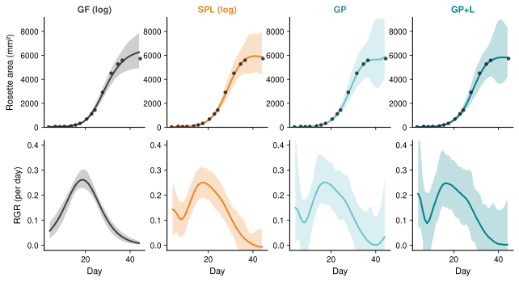
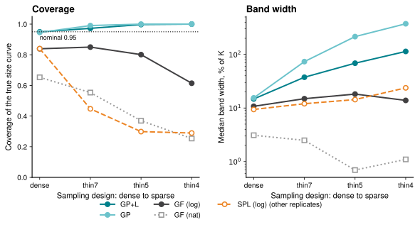
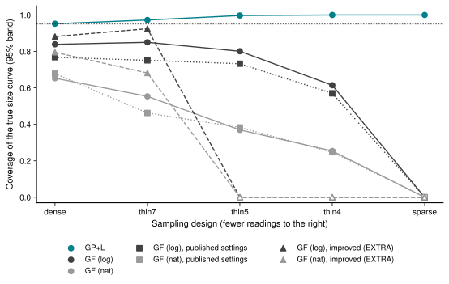
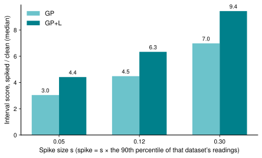
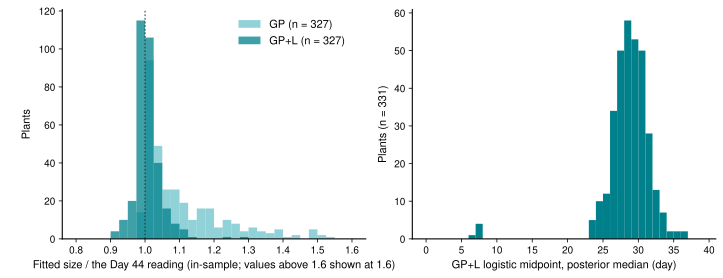
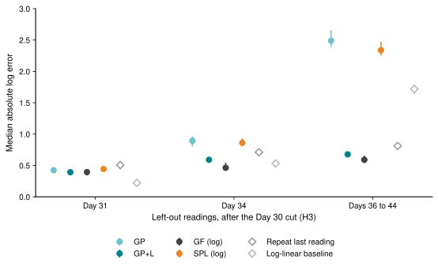

1The short version

abstract_1003_curves.csv, arabidopsis_rosette_area_valid.rds.

The four approaches
| Label | What it is | In general terms |
|---|---|---|
| GF (log) GF (nat) | Growth-function fits: the best of four standard growth curves (chosen by AIC), fitted on the log or the natural scale of size | Assume the plant follows a known S-shaped curve and estimate its few settings. Compact, and works with few readings, but is only as good as the shape assumed. |
| SPL | ASReml-R cubic smoothing spline | Lets the data draw a smooth curve, with the smoothness set by the data. Familiar to ASReml users. |
| GP | Gaussian process (Matérn 5/2 kernel) with no mean function | A flexible curve with a stated amount of wiggle. Where readings run out, it drifts back towards a straight line on the log scale. |
| GP+L | The same Gaussian process, with a logistic mean function | The flexible curve now wiggles around an S-shape instead of a straight line, which suits plants that level off. |
Reading the labels
- Coverage is the share of days on which a 95% band contains the true curve. Simulation targets 0.95; the left-out-readings intervals are 90%. The two are different kinds of interval (section 3).
- Temporal resolution is how many days each plant was measured on, from 14 (high) down to 3 (low).
- Failure count sits beside every error. A fit that fails counts as a miss.
- Every figure on a left-out-readings result carries the label in the box below.
2Why this matters
The problem
High-throughput phenotyping and field trials produce repeated measures of size over time: rosette area, canopy height, NDVI. Breeders and physiologists use them to ask when a genotype grows fastest, how quickly it grows relative to its size, and whether two genotypes differ. Those questions are about rates, not sizes: the absolute growth rate (AGR, the change in size per day) and the relative growth rate (RGR, the change per unit of size per day).
Rates are harder to estimate than sizes. A small error in a curve can become a large error in its slope, and the uncertainty has to be carried through that step correctly. The problem is worse when plants are measured on few days (low temporal resolution), when some genotypes are measured much more often than others, or when one reading goes wrong.
Two families of method
Growth functions assume the curve has a known shape (logistic, Gompertz, monomolecular) with a few interpretable parameters. They are compact and can work with very few readings, but are only as good as the shape assumed. Flexible statistical models (smoothing splines and Gaussian processes) let the data draw the shape. They can follow curves that no standard function matches, but they lean harder on the data, and on their own priors when data are thin.
Our longer-term aim is to bring such methods into ASReml-R mixed models of field and controlled-environment growth. Before that, we need to know how each behaves on its own, which is what this report tests.
What we asked
- Width: how wide are the bands each method gives, and how does that change as plants are measured on fewer days?
- Coverage: do 95% bands contain the true curve about 95% of the time?
- Failure: what happens as measurement days or late measurements are removed, or when an early reading is a spike? Does the fit fail, or do the intervals miss the truth?
We used simulated plants, where the true curve is known, and real Arabidopsis data, where it is not.
Terms used on this page
- Band (or interval): the range a method says the answer lies in. A 95% band should contain the truth about 95% of the time.
- Coverage: how often a band contains the truth. Too low means the method is overconfident; near 1 with very wide bands means it is cautious but gives little information.
- Plateau: the size a plant levels off at. Written K for the logistic curve.
- Log scale: working with the logarithm of size, so that equal proportional changes look equal. On this scale the relative growth rate is simply the slope.
- Left-out readings: real readings removed before fitting, then predicted, so a method can be scored against something it did not see.
3The four approaches
GF Growth functions
The idea. Assume the plant follows one of a small family of standard growth curves, and estimate the few settings that describe it (final size, rate, timing). Four curves are tried for each plant: monomolecular (steady slowing), three-parameter logistic (symmetric S-shape), four-parameter logistic (S-shape with a free lower level) and Gompertz (S-shape that slows more gradually after the midpoint). This follows the workflow of Paine et al. (2012).
The detail. Each curve is fitted by non-linear least squares (nls, with self-starting models SSasymp, SSlogis, SSfpl and SSgompertz). The curve is chosen by AIC, separately on the natural scale (GF (nat)) and the log scale (GF (log)). Uncertainty comes from random draws of the parameters from a multivariate normal distribution, using the scaled covariance matrix of the fit; growth rates are calculated from each draw. A fit fails if no curve can be fitted, the covariance is unusable, fewer than half the draws are finite, or the predicted median is zero or below; a failure counts as a miss.
The left-out-readings arms assume constant noise (no variance function). A further arm, GF (nat) with a variance that grows with size, is reported separately as an extra and is not part of the main comparison.
SPL ASReml smoothing spline
The idea. Let the data draw a smooth curve, with the amount of smoothing estimated from the data rather than chosen.
The detail. An ASReml-R cubic smoothing spline: size (or log size) against day, with a random spl(day) term, fitted by REML. Predictions and their covariance come from the fit. Growth rates are slopes calculated by finite differences (step 0.05 days) on the predictions, and bands come from multivariate-normal draws of the prediction covariance. On the log scale RGR is the slope and AGR is size × RGR. For the left-out readings, the interval is the predicted median ± 1.645 standard deviations, where the variance is the prediction error variance plus the residual variance. Fits that stop with a singular matrix or without converging are counted as failures and not patched. ASReml was run on one thread.
GP Gaussian process
The idea. Treat the growth curve as one draw from a family of smooth curves with a stated amount of wiggle (the length-scale), and let the readings narrow that family. Away from the readings the curve relaxes towards a straight line, and the band widens.
The detail. A marginal-likelihood Gaussian process (fit_gp_marginal, Stan model gp_marginal_matern52_deriv.stan) with a Matérn 5/2 kernel, fitted on the log scale with a constant residual standard deviation. The Matérn kernel allows curves that are smooth but not infinitely so, which is more plausible for plants than a squared-exponential kernel. RGR is the derivative f′, and AGR is exp(f) f′; both are taken from joint posterior draws, so the uncertainty in a rate is not found by dividing one uncertain number by another. Four chains of 2,000 iterations (1,000 warm-up), maximum tree depth 10, 95% bands, evaluated on days 1 to 44. A fit is flagged if divergences or tree-depth hits reach 1% of draws, if the largest R-hat (Vehtari et al. 2021) is above 1.01, or if the smallest bulk effective sample size is below 400. Flagged fits are kept and counted as worked.
Priors and software
- length-scale ~ inverse-gamma(2.789147, 16.092788)
- GP standard deviation ~ half Student-t(3, 0, sd_scale)
- slope b ~ normal(0, b_scale); intercept ~ Student-t(3, ly_med, sd_scale); sigma ~ half-normal(0, 1)
- Sampler: adapt_delta 0.8. The GP settings are frozen from the simulation work and were not tuned on the real data.
- rstan 2.32.7, R 4.5.2
GP+L Gaussian process with a logistic mean
The idea. The same Gaussian process, but the curve wiggles around an S-shape that levels off, rather than around a straight line. Where readings are few, the fit then relaxes to a plateau instead of running on.
The detail. The straight line on the log scale is replaced by the log of a three-parameter logistic (plateau K, rate r, midpoint tm). The three parameters are sampled jointly with the GP settings, with the closed-form marginal likelihood kept. The priors come from rules applied to each curve’s own readings: K is centred on the largest reading (log scale, standard deviation 0.5); r is centred on the steepest slope between consecutive reading days, clipped to between 0.02 and 1.5 per day (standard deviation 0.75 on the log scale); and tm is centred on the day the straight-line interpolation of the day means first reaches half the largest reading (standard deviation 7 days). Sampled with adapt_delta = 0.99. In the script (00_fit-gp-mm.R, version 0.1, 20 Nov 2026, md5 b102382c…) the idea that a logistic mean reduces the sag between readings and the surge in growth rate at the end is labelled a hypothesis and “untested”; the script records no test result. The comparisons on this page are the test.
A two-stage form (fit a logistic first, then a GP on what is left) was also built and is shown in the Step 3 table in the simulation section; it is not one of the five arms.
What each band is
Every method draws a band, but the four bands are not the same kind of interval, so their widths cannot be compared between methods. Trends within one method, such as how its band changes as resolution falls, can be compared. The table says what each band is in the two places they are used.
| Tool | Methods figure and simulation: 95% band, mean curve | Left-out readings: 90% prediction interval, new reading |
|---|---|---|
GF growth function (nls) | 95% band for the mean curve: 1,000 normal draws from the scaled vcov(); the chosen model only, so no model-selection uncertainty | 90% prediction interval: parameter draws plus residual-sd draws plus noise (from the declaration written before the run) |
| SPL ASReml smoothing spline | 95% band for the mean curve: 1,000 draws from ASReml’s prediction covariance; the smoothing variance is treated as known | 90%: predicted value ± 1.645 × √(prediction variance + residual variance); on the log scale the endpoints are then exponentiated |
| GP Gaussian process | 95% credible interval from 4,000 posterior draws; the noise-free curve | 90% from 4,000 predictive draws, including noise |
| GP+L Gaussian process with logistic mean | As GP, with the logistic mean’s three parameters sampled; adapt_delta 0.99 | As GP |
The line drawn is the fitted curve (GF, SPL) or the posterior median (GP, GP+L). In the simulation, coverage is the share of days 3 to 44 on which the 95% band contains the true noise-free size, and failed fits count as coverage 0; band width is the mean band width as a percentage of a fixed K = 5,000 mm², with the median taken over fits that worked. GP+L and GF come from the same datasets (paired); SPL comes from other replicates (unpaired); GP is in mm3_fits_all.csv only. Described from the band audit of 26 November 2026 (BAND_AUDIT_2026-11-26.md, a project document; open points on the limits page). Whether ASReml’s spline prediction covariance includes the residual variance is not settled (limits page).
Why the log scale
On the log scale RGR is simply the slope of the curve, and growth rates come from joint draws, which avoids dividing one uncertain number by another. Back-transforming each draw, rather than the point estimate, avoids a bias in the size band. We do not claim that the log scale causes any pattern in the coverage of the log growth-function arm; that was not isolated.
| Package | Version |
|---|---|
| R | 4.5.2 (2025-10-31) |
| asreml | 4.2.0.382 |
| rstan | 2.32.7 |
| StanHeaders | 2.39.1 |
| brms | 2.23.0 |
| posterior | 1.7.0 |
| nlme | 3.1.169 |
| MASS | 7.3.65 |
Citations for these are in the reference list below.
References.
- Paine CET et al. (2012) Methods Ecol Evol 3:245-256. doi:10.1111/j.2041-210X.2011.00155.x
- Carpenter B et al. (2017) Stan. J Stat Softw 76(1). doi:10.18637/jss.v076.i01
- Stan Development Team (2025) RStan 2.32.7. mc-stan.org
- Rasmussen CE, Williams CKI (2006) Gaussian Processes for Machine Learning. MIT Press
- Verbyla AP et al. (1999) J R Stat Soc C 48:269-311. doi:10.1111/1467-9876.00154
- Butler DG et al. (2023) ASReml-R Reference Manual 4.2. VSN International
- Junker A et al. (2015) Front Plant Sci 5:770. doi:10.3389/fpls.2014.00770
- Vehtari A, Gelman A, Simpson D, Carpenter B, Bürkner P-C (2021) Rank-normalization, folding, and localization: an improved R-hat for assessing convergence of MCMC. Bayesian Analysis 16(2):667-718. doi:10.1214/20-BA1221
- R Core Team (2025) R: A Language and Environment for Statistical Computing. R Foundation for Statistical Computing, Vienna, Austria. www.R-project.org
- Goodrich B, Gelman A, Carpenter B, et al. StanHeaders: C++ Header Files for Stan. R package (version 2.39.1). CRAN.R-project.org/package=StanHeaders
- Bürkner P-C (2017) brms: an R package for Bayesian multilevel models using Stan. J Stat Softw 80(1):1-28. doi:10.18637/jss.v080.i01
- Bürkner P-C, Gabry J, Kay M, Vehtari A (2026) posterior: Tools for Working with Posterior Distributions. R package version 1.7.0. mc-stan.org/posterior
- Pinheiro J, Bates D, R Core Team (2026) nlme: Linear and Nonlinear Mixed Effects Models. R package version 3.1-169. doi:10.32614/CRAN.package.nlme · Pinheiro JC, Bates DM (2000) Mixed-Effects Models in S and S-PLUS. Springer, New York. doi:10.1007/b98882
- Venables WN, Ripley BD (2002) Modern Applied Statistics with S, 4th edn. Springer, New York. www.stats.ox.ac.uk/pub/MASS4
4The data
Arabidopsis C24 (rosette area)
One genotype (C24), days 1 to 44, from Junker et al. (2015; e!DAL record 1135FA_analysis.xlsx, CC BY 4.0). Plants were separated into moving and stationary groups from the sampling-density pattern. The data status notes give 384 moving and 100 stationary plants before cleaning, which they say matches the paper; no table of those counts was saved.
| Group | Plants | Readings | Readings per plant |
|---|---|---|---|
| moving | 331 | 5242 | 14 to 19 (median 15) |
| stationary | 94 | 303 | 2 to 6 (median 3) |
| all | 425 | 5545 |
| Step | Count | Rule |
|---|---|---|
| Raw sheet, plant rows | 485 plant IDs | one leaked label row (1135FA) removed first (1 row) |
| Dead or failed germination | 51 plants removed | peak area below 100 mm² |
| Bad capture dates | Day 29 and Day 41 removed for all plants | within-plant crash rates well above neighbouring days |
| Stunted plants | 8 plants removed | peak area below 500 mm², at a natural gap in the sorted peak areas |
| After cleaning | 425 plants | see the table above for moving and stationary counts, read from the saved cleaned file |
From README_arabidopsis_status.txt (a status note, not a count table: no table of plants per stage was saved). The moving and stationary groups are reconstructed from the sampling pattern, not recorded; the note gives 384 moving and 100 stationary before cleaning and says this matches the paper. Days 38 and 40 are absent and Day 43 has far fewer plants, so pooled summaries on those days reflect sample size.
Wheat (FIP, ETH Zürich)
Canopy height from six year-lots. Genotypes show a real imbalance, with checks measured far more often than test lines. The lodging cut points are not finalised, so the wheat data are described only.
| Item | What the notes record |
|---|---|
| Source | FIP 1.0, ETH Zürich; plant height from the CroPyDB trait export (not the image-bundled copy) |
| Files used | 15 trait files and 14 design files, joined by plot |
| Rows | 142,646 in the input file; 137,762 in the cleaned file |
| Exclusions | lot FPWW028 (small 2019 lot) removed; laser-scan heights dropped on days with a drone measurement in lot FPWW022_lot3 (5 of 7 dates); six FPWW012 plants removed by a provisional rule |
| Canopy cover | not used (senescence artefact) |
| Replication | check plots are measured roughly 9 to 12 times as often as other genotypes, from earlier exploration; no count table was saved |
| Lodging | not yet filtered; detection is not finalised, so the wheat data are described only |
From README_data_provenance.md (wheat section) and README_height_data_status.txt. The status note carries a placeholder date. Nothing is fitted to the wheat data on this page.
Maize NDVI panel
Five time points per genotype with a published P-spline benchmark: a deliberately low-temporal-resolution case. Described only.
| Item | What the notes record |
|---|---|
| Source | Ames panel NDVI from drone flights (Wang et al., Dryad); published P-spline parameters and daily predictions are kept as a benchmark |
| Accessions and time points | 1,752 accessions; 5 time points (37, 44, 60, 73 and 115 days after planting) |
| Rows | 8,760 NDVI rows; 1,752 parameter rows; 138,329 daily-prediction rows (79 days per genotype) |
| One odd accession | NSL437884 has the text “FALSE” where its predictions should be: no benchmark predictions, but its NDVI readings and parameters are kept |
| What NDVI is | a bounded greenness index, not a size, so growth rates from it are not true AGR or RGR |
From README_data_provenance.md (maize section). No table of genotypes and time points was saved. The prediction rows are consistent with 1,751 genotypes × 79 days (138,329), which follows from those two numbers; it is not a saved count. Described only.
5Methods
Simulated plants
True curves. Five growth curves in three groups, so that the growth-function methods are not tested only on their home ground:
- Shapes the growth functions are built for: logistic and Gompertz.
- A near miss: Richards, close to those but not exactly any of them.
- Outside the standard shapes: a two-phase curve (two separate rises) and a growth-then-decline curve (growth followed by shrinkage).
Plateaus are 5,000 to 6,000 mm² and fastest growth is mostly near day 28. Each curve has a small starting size (y0 = 5 mm²) added to the whole curve, because a plain S-shape with the real timing is far smaller on day 1 than the real plants are, which makes early readings clamp at zero too often. The true size, AGR and RGR are known on every day.
Sampling designs (temporal resolution) come from the real Arabidopsis schedules. The highest resolution is the 14 days measured on nearly every frequently measured plant (days 3, 6, 8, 10, 13, 15, 17, 20, 24, 27, 31, 34, 36 and 44). The next three keep days 3 and 44 and a random 5, 3 or 2 of the 12 days in between, so 7, 5 or 4 days are measured. The lowest is 3 days (days 24, 27 and 44), as for the real stationary plants. The saved files call these designs dense, thin7, thin5, thin4 and sparse.
| Days measured | Which days | Name in the saved files |
|---|---|---|
| 14 (highest) | 3, 6, 8, 10, 13, 15, 17, 20, 24, 27, 31, 34, 36, 44 | dense |
| 7 | 3 and 44, plus 5 of the 12 days between (random for each dataset) | thin7 |
| 5 | 3 and 44, plus 3 of the 12 days between (random) | thin5 |
| 4 | 3 and 44, plus 2 of the 12 days between (random) | thin4 |
| 3 (lowest) | 24, 27, 44 | sparse |
Noise. A reading is the true size plus noise with standard deviation √(floor² + (proportion × size)²), so larger plants are noisier. The three levels are low (1.5% and 1 mm²), medium (4.5% and 3 mm²) and high (9% and 8 mm²). Readings that fall below zero are set to zero.
Scenarios and replicates. A scenario is one curve, one noise level and one design. The full grid is 5 curves × 3 noise levels × 5 designs. This report uses 25 of them: the 14-day design at several noise levels, the 7-, 5- and 4-day designs at medium noise, and one 3-day scenario. Each scenario is simulated many times; the test half (replicates 121 to 130, giving 250 datasets) is the half reported here, and a separate tuning half was used only for choices made before the test half was run. Every dataset has its own random seed, so any one can be regenerated alone.
Spikes. To test one wrong reading, the earliest reading is replaced by s times the 90th percentile of the dataset’s readings, with s = 0.05, 0.12 or 0.30.
Scoring rules for the simulation
- Coverage is the mean, over datasets, of the share of days 3 to 44 whose 95% band contains the true noise-free curve, for size, AGR and RGR. A failed fit counts as coverage 0, so no method gains by failing.
- Band width is, for each dataset, the mean over days 3 to 44 of the size band’s width as a percentage of a fixed plateau K of 5,000 mm² (the same K for every curve); the tables show the median over the fits that worked. Interval score combines width with a penalty when the truth is outside the band; lower is better.
- End-of-series AGR error (as a percentage of the peak AGR) and mid-gap size error (as a percentage of the plateau K) check the two places a smoother tends to go wrong: the last readings and the gap between widely spaced readings.
- Accuracy and band width are computed on fits that worked and always shown beside the failure count.
- GP+L and GP are fitted to the same datasets, and the growth-function arms were refitted to those datasets, so those comparisons are paired. The SPL results come from other replicates of the older grid, so they are unpaired and are labelled that way.
- Monte Carlo error is reported; differences under about twice the standard error are not read.
- Coverage near 1 with very wide bands is not good calibration, so coverage is read next to width.
Left-out readings (Arabidopsis)
Data. One genotype (C24), the moving plants, with sizes as rosette area in mm² (section 4).
Design. H1 removes the last reading of each plant, H2 the last two, and H3 every reading after day 30 (the late measurements). Each method is fitted to the remaining readings and predicts the ones removed. The design, measures and exclusions were declared before any fit and not changed afterwards. Where the cut falls relative to the plateau changes the ranking, so results are shown for each cut.
Predictions and intervals. The GP and GP+L predictions are posterior draws of the log size plus residual noise; the GP+L priors are recomputed from the remaining readings, so its plateau prior is centred on the largest remaining reading. The GF predictions draw parameters from a multivariate normal, draw the residual variance, and add noise on the arm’s own scale. SPL intervals are described in section 3, and the table there says what each tool’s band is. All intervals are 90% prediction intervals for a new reading, taken as the 5% and 95% quantiles of the draws (or the normal interval for SPL).
Measures. The absolute error of the median prediction on the log scale; the share of left-out readings inside the 90% interval; interval width; and whether the predicted median is above or below the reading. Failed fits count as misses for the interval share, and failure counts sit beside every error.
Baselines. Two trivial predictors give a sense of scale: “repeat the last reading” and a straight line on the log scale through the last two readings.
Reproducibility
Each dataset and each fit has a recorded random seed. The method scripts are frozen, meaning not edited after they were first used, and are listed by name and md5 in the file list kept with this report. Stan fits used four chains. ASReml was run on one thread.
6Simulation tests
Coverage and band width
The bands here are 95% bands for the true noise-free curve (the mean curve, not a new reading). Coverage is the share of days 3 to 44 on which the band contains the truth, and a failed fit counts as coverage 0. Width is the mean band width as a percentage of K = 5,000 mm², and the tables show the median over fits that worked. The tools build their bands differently (section 3), so compare each tool’s own trend across resolution, not widths between tools. GP+L, GP and GF are on the same datasets (paired); SPL is from other replicates (unpaired). GP appears only in mm3_fits_all.csv, not in the grid or paired summary files.
SPL (log) fits that fail, from the highest to the lowest of these four resolutions: 6% (14 days), 38% (7 days), 46% (5 days), 52% (4 days) (other replicates).
mm3_fits_all.csv (clean, test half, same datasets). GF: refit on GP+L’s datasets (paired). SPL (log), dashed and hollow: the older grid, other replicates, unpaired; failed fits there: 14 days 6%, 7 days 38%, 5 days 46%, 4 days 52%. Simulated truths are very smooth.| Arm | 14 days measuredhighest resolution · median 14 readings used | 7 days measured resolution · median 7 readings used | 5 days measured resolution · median 5 readings used | 4 days measured resolution · median 4 readings used | 3 days measuredlowest resolution · median 3 readings used |
|---|---|---|---|---|---|
| GP+Lmm3_fits_all | 0.9515% of K 0 of 90 failed | 0.9738% of K 0 of 50 failed | 1.0069% of K 0 of 50 failed | 1.00114% of K 0 of 50 failed | 1.00142% of K 0 of 10 failed |
| GPmm3_fits_all | 0.9515% of K 0 of 90 failed | 0.9973% of K 0 of 50 failed | 1.00215% of K 0 of 50 failed | 1.00374% of K 0 of 50 failed | 1.001669% of K 0 of 10 failed |
| GF (log)P1 and P2 (paired) | 0.8411% of K 0 of 50 failed | 0.8515% of K 0 of 50 failed | 0.8018% of K 0 of 50 failed | 0.6114% of K 1 of 50 failed | 0.00no fit worked (0 of 10) |
| GF (nat)P1 and P2 (paired) | 0.653% of K 0 of 50 failed | 0.552% of K 1 of 50 failed | 0.371% of K 3 of 50 failed | 0.251% of K 2 of 50 failed | 0.00no fit worked (0 of 10) |
| SPL (log)G1 and G2 (other replicates) | 0.849% of K 28 of 500 failed | 0.4512% of K 191 of 500 failed | 0.3014% of K 229 of 500 failed | 0.2924% of K 259 of 500 failed | 0.00no fit worked (0 of 100) |
Coverage counts a failed fit as a miss. Width is among fits that worked. Bands are 95% bands for the mean curve, of different kinds for different tools (section 3), so compare each row’s trend, not widths between rows. GP+L and GP: 50 datasets at each of the 7-, 5- and 4-day designs, 90 at 14 days, 10 at 3 days (the n is in each cell: failed of datasets). GF: refit on GP+L’s datasets, so paired (50 per design, 10 at 3 days). SPL (log): the older grid, other replicates, unpaired (500 per design, 100 at 3 days). Differences between cells smaller than about twice the Monte Carlo error should not be read. Simulated truths are very smooth.
Paired comparison with GF

P1_cov_y.csv (paired refit). Open markers: no fit worked in that design (0 of the datasets). Dashed line: 0.95. Simulation only: smooth truths, logistic = logistic + 5 mm², failed fits count as misses.Effect of an early spike, and a spike-cleaning rule

mm3_c1_c5.csv, columns c4_ratio and c4_ratio0; 240 datasets each). The spike replaces the earliest reading only. Simulation only; smooth simulated truths.Step 3 declared verdicts
The Step 3 rules were declared before the runs. This table gives the quantities those rules were built from, without pass or fail wording; the declared verdict for each rule is in the mm3_c1_c5.csv and mm3_c6_c7.csv files named in the note, and the rules were not changed after the results.
| Quantity | GP+L (joint) | GP+L two-stage (not one of the five arms) |
|---|---|---|
| Paired change in coverage vs GP (size / growth rate AGR / RGR), 14-day designs mean change over 90 paired datasets (9 scenarios at 14 days measured) | +0.004 / -0.002 / +0.002 | +0.003 / -0.001 / +0.003 |
| Median paired change in relative interval score (size / AGR / RGR) negative = lower score than GP | -40 / -169 / -74 | -45 / -210 / -84 |
| Fit failure rate on clean test data | 0.0% | 0.4% |
| Change in the share of fits flagged by the diagnostics rule vs GP | +0.050 | +0.297 |
| Spike: interval score spiked / clean, s = 0.05 / 0.12 / 0.30 median over datasets | 4.4 / 6.3 / 9.4 | 5.8 / 8.7 / 12.0 |
| Spike: same ratio for GP on the same datasets | 3.0 / 4.5 / 7.0 | 3.2 / 5.6 / 9.4 |
| Two-phase curves: coverage of size, variant / GP; failure rate | 0.971 / 0.967; 0% | 0.948 / 0.967; 0% |
| End-of-series AGR error, thin designs (median, % of peak AGR), variant / GP | 10.2 / 69.7 | 9.6 / 69.7 |
| Mid-gap size error, thin5 + thin4 (median, % of K), variant / GP | 4.0 / 15.9 | 3.8 / 16.2 |
| Band width, variant / GP: end window; mid-gap | 0.42; 0.49 | 0.30; 0.23 |
Read from mm3_c1_c5.csv and mm3_c6_c7.csv (all curves). The files also carry a verdict column for each rule, declared before the runs; those words are not reproduced here. The spike ratio is larger for GP+L than for GP, but the Step 3 report (REPORT_A2_mm_step3_results_2026-11-22.md) notes that GP+L’s own clean score is about half GP’s, so the same or a smaller spiked score gives a larger ratio: a ratio of scores is not a direct measure of the spiked score. Smooth simulated truths; spikes hit only the earliest reading.
7Arabidopsis, description
Description only. There is no accuracy or error language on this page, because the true curve of a real plant is unknown. The only scored real-data test is the left-out readings in the next section.
The one-plant picture (size and relative growth rate for each tool) is on the first page.
| Arm | Plants | Fits that worked | Flagged fits | Fits with any divergence | Fits with tree-depth hits | Max R-hat: median (largest) | Min bulk ESS: median (smallest) | Fitted size / Day 44 reading: median; share above 1 |
|---|---|---|---|---|---|---|---|---|
| GP (stored fits, adapt_delta 0.8) | 331 | 331 | 28 (8.5%) | 189 | 0 | 1.005 (1.07) | 806 (42.2) | 1.059; 95.7% of 327 |
| GP+L (adapt_delta 0.99) | 331 | 331 | 27 (8.2%) | 8 | 1 | 1.005 (1.69) | 893 (6.3) | 1.001; 54.4% of 327 |
From arab_mj_set_per_fit.csv. Real data with no known truth, so nothing here is accuracy. Flagged fits are counted as worked; failures would count as misses (there were none). Fit-against-reading comparisons are in-sample.

arab_mj_set_per_fit.csv. Description only, in-sample: no truth is known, so this is not accuracy. The few plants at an early midpoint are discussed below.| Plant | Fit | Chains: main growth / early step | Flagged | Max R-hat | Min bulk ESS | Divergences | Tree-depth hits | Fit, Day 44 (mm²) | Band width, Day 44 (mm²) | Day 44 reading (mm²) |
|---|---|---|---|---|---|---|---|---|---|---|
| 1135FA1063 | original (4 chains, stored) | 2 / 2 | yes | 1.69 | 6 | 22 | 0 | 3,888 | 3,934 | 3,785 |
| 1135FA1063 | 8 chains, new seed | 1 / 7 | yes | 1.30 | 21 | 0 | 444 | 3,891 | 2,052 | 3,785 |
| 1135FA1280 | original (4 chains, stored) | 1 / 3 | yes | 1.65 | 7 | 0 | 0 | 3,674 | 613 | 3,719 |
| 1135FA1280 | 8 chains, new seed | 4 / 4 | yes | 1.67 | 13 | 0 | 0 | 3,674 | 633 | 3,719 |
| 1135FA1294 | original (4 chains, stored) | 1 / 3 | yes | 1.53 | 7 | 0 | 217 | 5,418 | 5,092 | 5,373 |
| 1135FA1294 | 8 chains, new seed | 0 / 8 | no | 1.00 | 2545 | 0 | 0 | 5,429 | 1,135 | 5,373 |
| 1135FA1323 | original (4 chains, stored) | 3 / 1 | yes | 1.53 | 7 | 0 | 0 | 5,823 | 901 | 5,820 |
| 1135FA1323 | 8 chains, new seed | 8 / 0 | yes | 1.18 | 31 | 1 | 0 | 5,817 | 898 | 5,820 |
From arab_mj_diag_8chain_vs_original.csv and arab_mj_diag_per_chain.csv. A chain is counted as “early step” when its logistic midpoint is before Day 12; the other chains put the midpoint between Day 21 and Day 31. More chains did not settle the split. The fitted median curve at Day 44 barely changes between the original and the 8-chain fit; the band and the noise estimate do change when the chains split. Why the chains split is a hypothesis that has not been tested: all four plants have a zero reading early on and a steep Day 6 to Day 8 step, so a logistic on that early rise may fit about as well as one on the main rise.
8Arabidopsis, left-out readings
H1: last reading left out
| Arm | Median absolute log error | Readings with no fit | Inside 90% interval | Width ln(upper / lower) |
|---|---|---|---|---|
| GP+L | 0.0620.055 to 0.072 | 0 of 327327 plants scored | 100% | 1.93 |
| GP | 1.1540.530 to 1.356 | 0 of 327327 plants scored | 97% | 3.05 |
| GF (log) | 0.1510.126 to 0.169 | 0 of 327327 plants scored | 93% | 1.44 |
| GF (nat) | 0.0890.075 to 0.103 | 3 of 327 ●324 plants scored | 36% | 0.11 |
| SPL (log) | 0.4370.220 to 0.564 | 8 of 327 ●319 plants scored | 85% | 2.14 |
| SPL (nat) | 0.1340.106 to 0.168 | 90 of 327 ●237 plants scored | 6% | 0.02 |
| Repeat last reading | 0.0590.052 to 0.065 | 0 of 327327 plants scored | – | – |
| Log-linear baseline | 0.1560.117 to 0.211 | 0 of 327327 plants scored | – | – |
| GF (nat), improved (EXTRA) | 0.0880.076 to 0.112 | 7 of 327 ●320 plants scored | 56% | 0.19 |
H2: last two readings left out
| Arm | Median absolute log error | Readings with no fit | Inside 90% interval | Width ln(upper / lower) |
|---|---|---|---|---|
| GP+L | 0.0890.081 to 0.102 | 0 of 658329 plants scored | 100% | 2.38 |
| GP | 1.3711.291 to 1.436 | 0 of 658329 plants scored | 93% | 3.73 |
| GF (log) | 0.2190.191 to 0.240 | 0 of 658329 plants scored | 93% | 1.59 |
| GF (nat) | 0.1260.110 to 0.144 | 10 of 658 ●324 plants scored | 34% | 0.10 |
| SPL (log) | 0.6600.626 to 0.709 | 16 of 658 ●321 plants scored | 81% | 2.51 |
| SPL (nat) | 0.2240.209 to 0.246 | 180 of 658 ●239 plants scored | 10% | 0.06 |
| Repeat last reading | 0.0970.087 to 0.105 | 0 of 658329 plants scored | – | – |
| Log-linear baseline | 0.3390.322 to 0.359 | 0 of 658329 plants scored | – | – |
| GF (nat), improved (EXTRA) | 0.1230.106 to 0.144 | 20 of 658 ●319 plants scored | 50% | 0.16 |
H3: everything after Day 30 left out
| Arm | Median absolute log error | Readings with no fit | Inside 90% interval | Width ln(upper / lower) |
|---|---|---|---|---|
| GP+L | 0.6200.600 to 0.666 | 0 of 1460329 plants scored | 99% | 3.20 |
| GP | 1.1361.059 to 1.212 | 0 of 1460329 plants scored | 85% | 4.53 |
| GF (log) | 0.5050.452 to 0.551 | 24 of 1460 ●324 plants scored | 88% | 2.30 |
| GF (nat) | 0.2780.225 to 0.314 | 139 of 1460 ●298 plants scored | 43% | 0.37 |
| SPL (log) | 1.1001.067 to 1.161 | 54 of 1460 ●317 plants scored | 54% | 2.54 |
| SPL (nat) | 0.1810.161 to 0.197 | 337 of 1460 ●247 plants scored | 8% | 0.08 |
| Repeat last reading | 0.7560.732 to 0.778 | 0 of 1460329 plants scored | – | – |
| Log-linear baseline | 0.7290.668 to 0.768 | 0 of 1460329 plants scored | – | – |
| GF (nat), improved (EXTRA) | 0.2550.208 to 0.304 | 301 of 1460 ●260 plants scored | 42% | 0.45 |
Failed readings and the plants scored are different counts and are kept apart: “no fit” counts left-out readings; the line beneath counts plants that were scored. The pale rows are baselines (no interval) and the EXTRA arm, which is reported only and is not part of the main comparison. The two numbers under each error are the lo and hi columns of F1a_error_each_tool.csv, as drawn in the poster’s figure. The saved file does not state what kind of interval the lo and hi columns are, so they are shown as drawn on the poster and not interpreted.

| Arm | Day 31 | Day 34 | Days 36 to 44 |
|---|---|---|---|
| GP | 0.420 of 329 no fit | 0.890 of 329 no fit | 2.490 of 802 no fit |
| GP+L | 0.390 of 329 no fit | 0.590 of 329 no fit | 0.680 of 802 no fit |
| GF (log) | 0.395 of 329 no fit | 0.465 of 329 no fit | 0.5914 of 802 no fit |
| SPL (log) | 0.4412 of 329 no fit | 0.8612 of 329 no fit | 2.3430 of 802 no fit |
| Repeat last reading | 0.510 of 329 no fit | 0.710 of 329 no fit | 0.810 of 802 no fit |
| Log-linear baseline | 0.220 of 329 no fit | 0.530 of 329 no fit | 1.720 of 802 no fit |
Near the plateau, and with late measurements removed
Close to the plateau, the trivial baseline “repeat the last reading” is about as close as GP+L: 0.059 against 0.062 at H1 and 0.097 against 0.089 at H2 (median absolute log error). Plain natural-scale arms have far-too-narrow intervals (inside the 90% interval at H3: GF (nat) 43%, SPL (nat) 8%), and SPL (nat) has no fit for 337 of 1460 readings at H3.
Extra arm: GF (nat) with a variance function (report only)
Reported for completeness and not part of the main comparison. Failed plants and failed readings are different counts and are kept separate here.
| Level | Arm | Inside the 90% interval (failures as misses) | Median absolute log error | Median interval width (mm²) | Fits that failed |
|---|---|---|---|---|---|
| H1 | GF (nat) | 36.1% | 0.089 | 571 | 3 plants (3 readings) |
| H1 | GF (nat), improved (EXTRA) | 55.7% | 0.088 | 1,040 | 7 plants (7 readings) |
| H1 | GF (log) | 92.7% | 0.152 | 8,280 | 0 plants (0 readings) |
| H1 | GP+L | 99.7% | 0.062 | 11,100 | 0 plants (0 readings) |
| H2 | GF (nat) | 34.3% | 0.098 | 492 | 5 plants (10 readings) |
| H2 | GF (nat), improved (EXTRA) | 49.5% | 0.097 | 885 | 10 plants (20 readings) |
| H2 | GF (log) | 92.7% | 0.191 | 8,740 | 0 plants (0 readings) |
| H2 | GP+L | 100.0% | 0.087 | 13,900 | 0 plants (0 readings) |
| H3 | GF (nat) | 43.4% | 0.258 | 1,470 | 32 plants (139 readings) |
| H3 | GF (nat), improved (EXTRA) | 41.9% | 0.235 | 1,840 | 69 plants (301 readings) |
| H3 | GF (log) | 88.1% | 0.446 | 7,780 | 5 plants (24 readings) |
| H3 | GP+L | 99.0% | 0.563 | 11,500 | 0 plants (0 readings) |
One genotype (Arabidopsis C24, moving plants). GP = frozen, simulation settings, no mean function. Scored on left-out readings only; readings from one plant are not independent. Post hoc arm, proposed after the H1 to H3 results; not part of the declared design. Error and width are over the readings where all five arms worked, so declared-arm figures here can differ slightly from the main table (for example H3 GF (log) error). Read from EXTRA_holdout_H*_five_tools_summaryA_failures_as_misses.csv and EXTRA_holdout_H*_failure_counts.csv.
What it showed. Letting the noise grow with size widened the natural-scale intervals and raised the share inside them, but it stayed far below 90%. The log-scale GF arm reaches a much higher share with wider intervals. The constant residual sd is therefore at most part of the reason the plain natural-scale arm’s intervals are narrow. Other possible causes were listed in the report and were not tested.
Corrections carried from the report’s erratum (23 Nov 2026). (1) The statement that the GF (log) intervals are about 8 times wider than the extra arm’s holds only for H1; from the median widths the ratio is about 8 for H1, about 10 for H2 and about 4 for H3. (2) Most of the extra arm’s failures (4 of 7 plants in H1, 7 of 10 in H2, 39 of 69 in H3) come from the frozen fallback rule, where a chosen plain-nls fit counts as a failure under this arm’s declared rule, so the failure rate reflects that rule as much as the variance function. The source report is REPORT_A3_EXTRA_natural_improved_H1_H2_H3_2026-11-23.md.
9Limits and open questions
- Simulated truths are very smooth; real curves can be rougher.
- The real-data test is one genotype, and readings from one plant are not independent.
- Rankings depend on where the cut falls relative to the plateau.
- The cause of the log-scale growth-function coverage was not isolated.
- The wheat GP+L look has not been run (it needs the lodging cut-point list).
The band audit of 26 November 2026 (BAND_AUDIT_2026-11-26.md, a project document) recorded what each band is and left these points open:
- Whether ASReml’s prediction covariance for the spline leaves out the residual variance. The left-out-readings script adds the residual on top, which suggests it does. The ASReml knowledge-base page for
predict.asremldescribes thevcovoption but does not say; the ASReml-R reference manual or a check run would settle it. - The GF and SPL simulation-grid results came from scripts dated before the saved results, with no run log; only the arm settings are confirmed.
- How GP failures enter the GP simulation numbers: GP appears only in
mm3_fits_all.csv, and flagged fits are counted as worked. - The run-time GF left-out-readings code is not on disk or in version control, so the description of those GF intervals rests on the declaration written before the run and on later code.
- The compiled Stan models were not checked against their
.stansources (only the source files’ md5s were). - For the one-plant figure, the header of the script that produced the GF fit and the stored fit disagree about the md5 it ran with; the settings quoted are those of the current file.
| Limit or open item | How it is handled here |
|---|---|
| The hold-out is one genotype and one dataset, mostly near the plateau; a trivial baseline is as close as GP+L there | Both are stated; H3 is the test before the plateau |
| GP+L’s plateau prior is centred on the largest remaining reading, so it runs low after a cut well before the plateau (H3) | Documented limit. Not tuned on these data; any variant is declared first and tested in simulation |
| GP here is the frozen simulation-settings Gaussian process with no mean function | Labelled as such on every hold-out result |
| Spline and natural-scale growth-function fits fail on some plants and readings | Failure counts sit beside every error; failures count as misses for coverage; failures are not patched |
| GP+L chains settle in two places for some plants (four known; others not examined) | The fitted curve is stable but the band and noise estimate depend on the mode |
| Simulated truths are very smooth; the simulated logistic is logistic + 5 mm²; spikes hit only the earliest reading | Stated with every simulation result |
| A spike-cleaning rule works only for blatant spikes at the 14-day and 7-day resolutions | Tested in simulation only; not used on real data |
| Wheat lodging detection is not finalised | The wheat look needs a saved list of cut points; not run |
| Unexplained: the “improved” GF (log) variant gives the same fits as GF (log); the “published-settings” GF variants match GF (log) in about half of fits in an earlier grid; GP+L flags more fits under proportional noise; spline fits hit singularities | Reported as unexplained |
The saved software record is a single sessionInfo from the analysis session, and the ASReml fits were run in a separate session | Whether every fit used exactly these library versions is not recorded |
Compiled from the project’s own risk register.
10What comes next
- How few plants need to be measured at high temporal resolution?
- Borrowing information from those plants for relatives and neighbours measured at low resolution (hierarchical borrowing).
- Adding genetic relatedness and spatial information to the curves.
- GP+L and spline refinements, including a GP+L variant with a prior on the plateau (K), to be tested in simulation first.